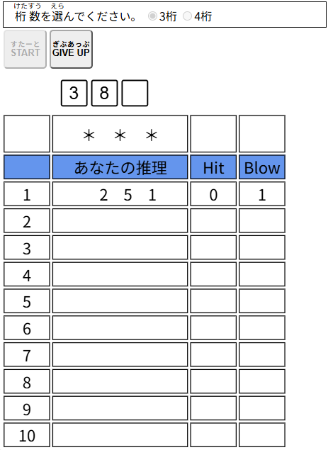

| 【ヒット＆ブロー】 |
|
ヒットアンドブローは、0～9の数字を使ってコンピュータが作った数値を当てる推理ゲームです。  ・遊ぶ桁数を選びます。 ・スタートボタンをクリックすると0～9の数字から重複なしで3桁または4桁の問題を作ります。 先頭が「0」になることもあります。 ・入力ボックスに数字を入力するとコンピュータが「ヒット（Hit）」と「ブロー（Blow）」の数を返します。 ※ヒット（Hit）: 数字と桁の位置がどちらも合っている数。 ※ブロー（Blow）: 数字は合っているが、桁の位置が違う数。 ・すべての位置が一致する「3ヒット」または「4ヒット」になるまで（最大10回まで）繰り返して当てます。 ・[START]ボタンをクリック（タップ）するとコンピュータが問題を作ります。 ・[GIVE UP]ボタンをクリック（タップ）すると答えを表示します。 |